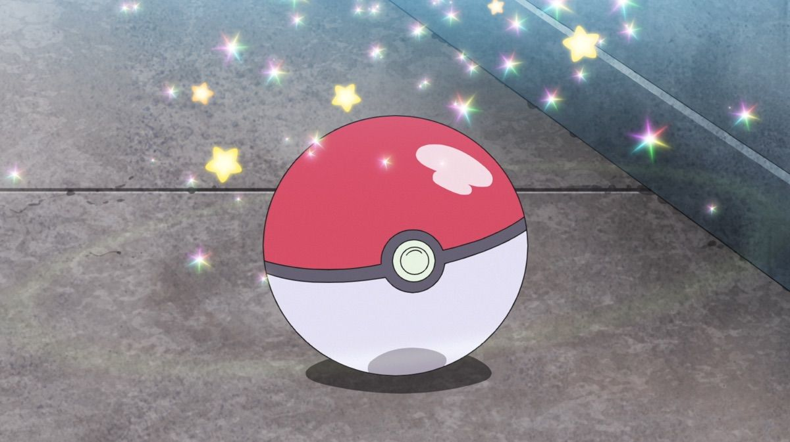

La primera vez que el mundo escuchó sobre los Pokémon –equivalente a decir “Pocket Monsters” o “monstruos de bolsillo”– fue hace 30 años, en 1996, cuando en Japón debutaron dos videojuegos para la consola Gameboy de Nintendo y que cambiarían la historia para siempre: “Pocket Monsters: Green” y “Pocket Monsters: Red”.
El desafío del videojuego parecía sencillo: recorrer bosques, ciudades, cuevas y océanos recolectando los 151 “monstruos” existentes para completar la “pokedex” y convertirse en el gran maestro de todos. Pero no era tan fácil: algunos monstruos sólo aparecían en la versión verde y tenías que intercambiar con un amigo con la edición roja. Otros monstruos considerados “legendarios” eran increíblemente difíciles de atrapar, y tus rivales –quienes también capturaban a estos seres– te retaban a incontables batallas.
Parque temático de Pokémon en Tokio, que fue presentado a los medios antes de su apertura al público el 5 de febrero. Los visitantes pueden encontrar alrededor de 600 Pokémon en PokePark Kanto, situado dentro del parque de atracciones Yomiuri Land. La fama del juego creció tanto que para 1999 el fenómeno llegó a varios países de Occidente. Los “Pocket Monsters” pasaron a conocerse mundialmente como Pokémon –un acrónimo de la palabras en japonés para decir “Pocket Monsters”– y se convirtieron en una de las franquicias más exitosas de todos los tiempos: aparecieron series para televisión traducidas en más de 30 idiomas, figuras de acción, peluches, mangas, cartas coleccionables, películas y un sinfín de historias paralelas en múltiples plataformas. El mundo se contagió de la “pokemanía” y el rostro de un ratón amarillo de tipo eléctrico comenzó a llenar las tiendas y los mercados: el afamado protagonista Pikachu.

Cuando el japonés Satoshi Tajiri, de 60 años, era un niño, su mayor pasión era explorar bosques en su lugar natal en Machida, en Tokio, y coleccionar distintos tipos de insectos. Cuando creció, junto a su gran amigo e ilustrador Ken Sujimori, decidieron fundar Game Freak a fines de los años 80, una firma que en principio fue una revista, pero que terminó evolucionando en una empresa dedicada al desarrollo de videojuegos.
Tajiri ya tenía el proyecto de Pokémon en mente y se basó en su gran pasatiempo de pequeño. Con Sujimori comenzaron a crear los primeros bocetos de Pokémon, que en ese entonces, principios de los años 90, decidieron llamar momentáneamente “Capsule Monsters”, dada la dinámica de tener que atraparlos en una cápsula (la famosa “pokebola”).

Los dibujos de Sujimori ganaron mucha popularidad porque estaban basados no sólo en la biología real de animales, sino que también en áreas como la química, la física o la termodinámica. El desafío era crear monstruos que pudieran tener poderes más allá de lo común, como lanzar fuego o ataques eléctricos tan potentes como un rayo. Así, tras cientos de pruebas, llegaron a la creación del primer pokémon de la historia: un Rhydon. Luego vendría el resto, hasta llegar a 151 pokémon en la primera generación.
La gran apuesta de Nintendo Game Freak trató de vender el proyecto a varias entidades de la industria para que lo distribuyeran, pero no fue fácil. La pequeña empresa ya había agotado todos sus recursos y solo quedaban dos caminos: irse a la quiebra o lograr un acuerdo milagroso con algún gigante. Y fue entonces cuando Nintendo se fijó en ellos.
Tras varias negociaciones y discusiones, el 27 de febrero de 1996 aparecieron los primeros videojuegos en el mercado japonés. Y el resto es historia: las versiones Green y Red lograron récords de ventas en Japón y en 1999 llegaron a Occidente con “Pokémon: Blue”, “Pokémon: Red” y “Pokémon: Yellow”.
En los años 90 –y posterior al éxito de los videojuegos– debutaron en Japón las cartas coleccionables de Pokémon (TCG, por sus siglas en inglés), una nueva forma de juego que captó no sólo a la audiencia activa, sino que a todo un nuevo público. Poco tiempo después se estrenó una serie animada que tenía como protagonista a Satoshi (Ash en Occidente), cuya meta era ser un maestro pokémon y vivir miles de aventuras con su fiel compañero Pikachu.
Así, en muy poco tiempo, Game Freak se dio cuenta que el éxito de una franquicia también venía de la mano de una estrategia clave: la diversificación de productos y narrativas. Con la llegada de películas, juguetes y libros, en el año 2000 aparece The Pokémon Company, una entidad que une a Game Freak, Nintendo y Creatures para administrar la marca, su distribución y posicionamiento en todo el mundo.